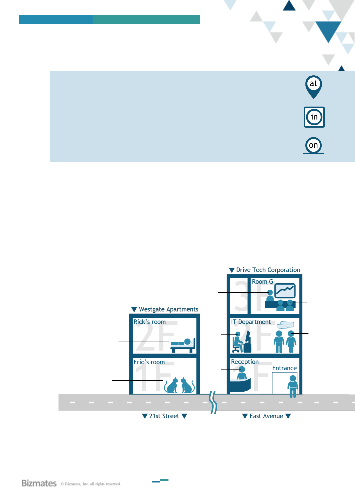
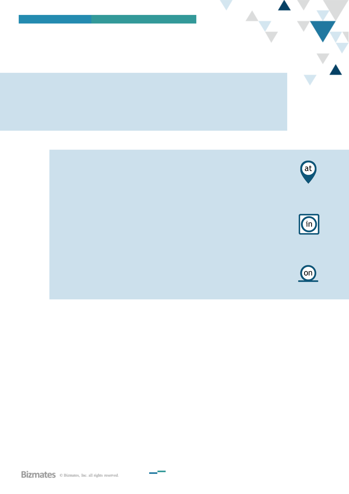
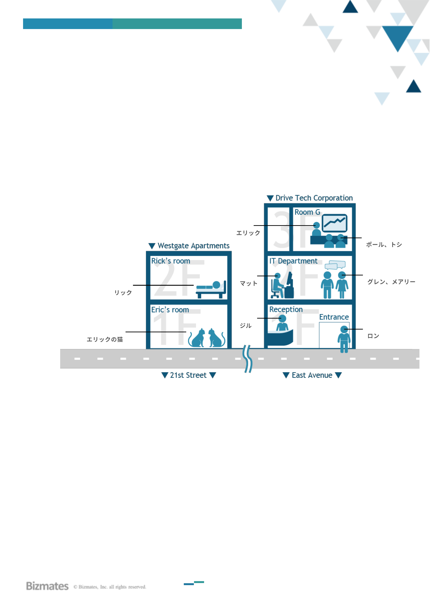

BIZMATES PROGRAM
LEVEL 1IRANK AILESSON 5
AT, IN, ON
5
SEE
Use AT to talk about a specific point
At the office, at home, at my desk
Use IN to talk about an enclosed area
In a meeting room, in Japan, in our department
Use ON to talk about a surface
On the desk, on the wall, on the floor
Example
Where is Mary? Do you know, Ken?
She is not at her desk. Maybe she’s in a meeting. ... Oh, I remember. She is attending a
conference at our client’s office today. Their office building is very nice. It’s on the 30th
floor.
▼▼▼
TRY
Answer these questions from your trainer. The trainer may change the underlined words.
- Is Matt working on the 3rd floor?
- Where is Matt?
- What are Paul and Toshi doing?
- Where is Drive Tech?
- Who is at home?
Rick
Eric’s cats
Eric
Matt
Jill
Paul,
Toshi
Glen,
Mary
Ron
▼▼▼
ACT
Talk about where you, your family members and colleagues are in the morning, afternoon and
evening.

BIZMATES PROGRAM
LEVEL 1IRANK AILesson 5
前置詞 (AT, IN, ON)
4
SEE
Use AT to talk about a specific point
At the office, at home, at my desk
Use IN to talk about an enclosed area
In a meeting room, in Japan, in our department
Use ON to talk about a surface
On the desk, on the wall, on the floor
Example
Where is Mary? Do you know, Ken?
She is not at her desk. Maybe she’s in a meeting. ... Oh, I remember. She is attending a
conference at our client’s office today. Their office building is very nice. It’s on the 30th
floor.

BIZMATES PROGRAM
LEVEL 1IRANK AILesson 5
4
TRY
Answer these questions from your trainer. The trainer may change the underlined words.
- Is Matt working on the 3rd floor?
- Where is Matt?
- What are Paul and Toshi doing?
- Where is Drive Tech?
- Who is at home?
Rick
Eric’s cats
Eric
Matt
Jill
Paul, Toshi
Glen, Mary
Ron
▼▼▼
ACT
Talk about where you, your family members and colleagues are in the morning, afternoon and evening.
朝、昼、夜、自分や家族、同僚がどこにいるかを話しましょう。